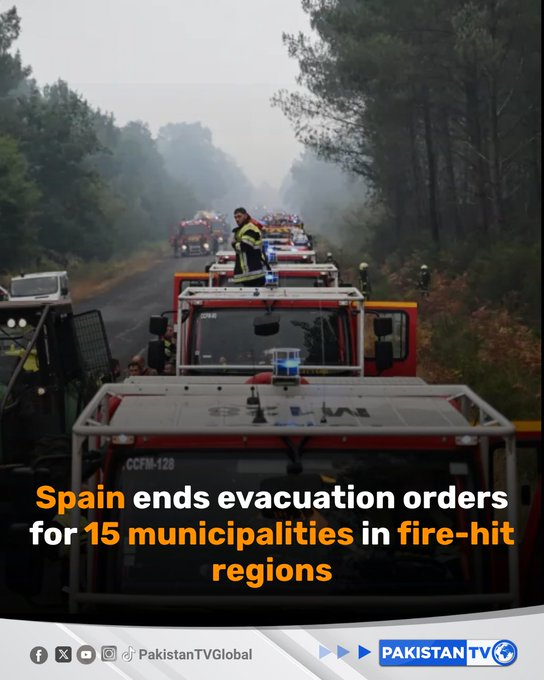

@PakTVGlobal
📝 原文: Spain ended evacuation orders for 15 municipalities in two areas hit by wildfires, allowing thousands of people to go home, the interior ministry said.#SpainWildfires#WildfireRecovery#Spain#PakistanTV
🇨🇳 译文: Error 500 (Server Error)!!1500.That’s an error.There was an error. Please try again later.That’s all we know.


🕒 2026-07-28T22:51:09+00:00